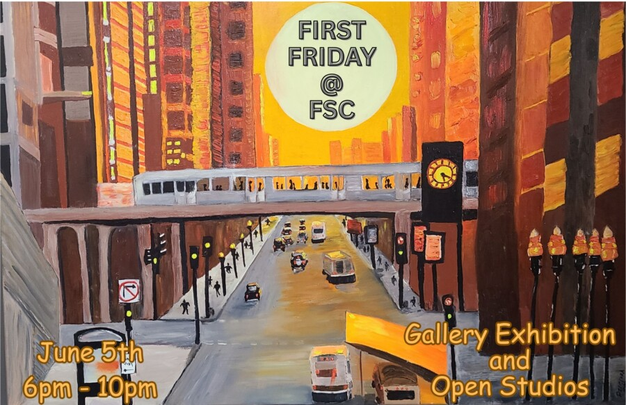

FIRST FRIDAYS ART EXHIBIT at Fulton Street Collective
Fulton Street Collective, in collaboration with West Town Chamber of Commerce, presents FIRST FRIDAYS ART EXHIBIT on Friday, June 5th from 6-10pm.
Curated by Ryan Miller
What is it that makes Chicago unique? To some, it’s tall buildings and old memories of mobsters. To others, it’s sports teams and Italian beef sandwiches. Come to West Town’s First Friday and see our artistic vision of all things Chicago in our current installation.
To ensure the organic growth of West Town as Chicago’s emergent gallery district and further unite the neighborhood as a cultural destination, please join us in our gallery on the first Friday of every month for a collaborative art opening.
West Town Chamber of Commerce supports and elevates similar efforts while further facilitating connection among Chicago’s gallerists, artists, collectors and patrons.With enthusiastic participation from area galleries, First Fridays offers the potential to ensure the continued development of the West Town neighborhood as a nexus of fine art and arts development in Chicago and beyond.
Promo painting by Patricia Urbonas Clark
RESERVATIONS RECOMMENDED: https://www.eventbrite.com/e/1989788349517